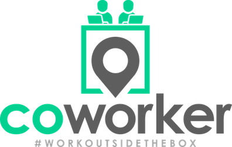
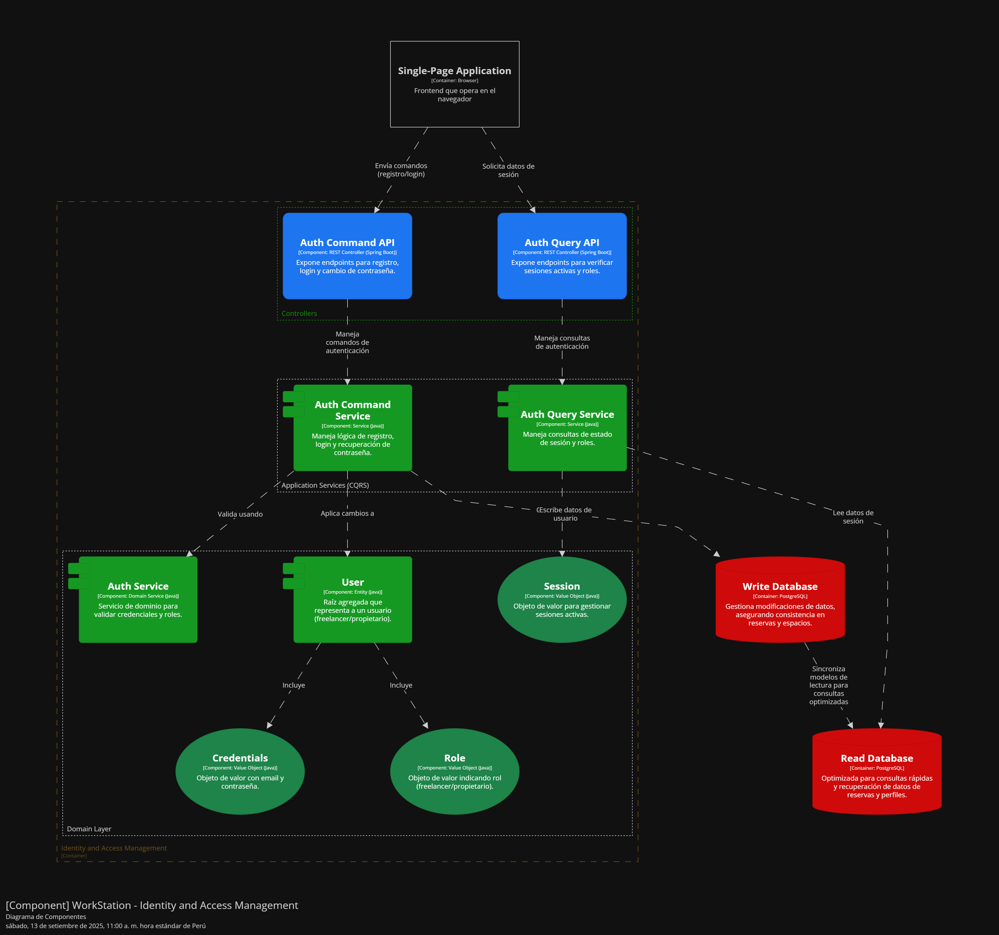

COURSE PROJECT

Universidad Peruana de Ciencias Aplicadas
Ingeniería de Software
Desarrollo de Aplicaciones Open Source
Profesor: Flores Moroco Juan Antonio
Producto: WorkState
| Member | Code |
|---|---|
| Quijada Magro Jeremy | U202219657 |
| Huang Liu Franco | U201914541 |
| La Madrid Lozano Ivan | U202219657 |
| Saravia Huaricancha Arturo | u202312447 |
| Cumba Rengifo Leonardo | U202311912 |
Diciembre 2025
| Versión | Fecha | Autor | Descripción |
|---|---|---|---|
| TB1 | 08/09/2025 | Quijada Magro, Jeremy | Desarrollé la carátula del repositorio. |
| TB1 | 12/09/2025 | Huang Liu, Franco | Desarrollo de la database diagram |
| TB1 | 15/09/2025 | Huang Liu, Franco | Desarrollo de web app wireframes |
ABET – EAC - Student Outcome 3
Criterio: Capacidad de comunicarse efectivamente con un rango de audiencias.
En el siguiente cuadro se describen las acciones realizadas y conclusiones del equipo que sustentan el logro del ABET - EAC - Student Outcome 3:
| Criterio específico | Acciones realizadas | Conclusiones |
|---|---|---|
| 1. Comunica oralmente con efectividad a diferentes rangos de audiencia | TB1: | TB1: |
| 2. Comunica por escrito con efectividad a diferentes rangos de audiencia | TB1: | TB1: |
WorkStation es una aplicación web innovadora diseñada para facilitar la reserva eficiente de espacios de trabajo en oficinas compartidas. Su propósito es conectar a freelancers, trabajadores remotos, startups y empresas de todos los tamaños con espacios de coworking disponibles en su ciudad o alrededor del mundo.
La plataforma permitirá a los usuarios buscar, comparar y reservar escritorios, salas de reuniones, oficinas privadas y otros recursos disponibles en tiempo real. Cada espacio contará con información detallada como ubicación, precios, horarios, disponibilidad, fotos, servicios incluidos (Wi-Fi, café, impresoras, etc.), y valoraciones de otros usuarios
Considerando la flexibildad y la adaptabilidad como puntos esenciales para el crecimiento de las startups y los trabajos freelance, WorkStation brinda una solución que compite con la rigidez de los contratos tradicionales, y propone una instancia mucho más moderna para este espacio de trabajo que las empresas necesitan.
| Foto | Alumno | Descripción |
|---|---|---|
| Quijada Magro Jeremy Alexander | Estudiante de Ingeniería de Software que planea enfocarse en la gestión de proyectos. Con conocimientos básicos en programación web y bases de datos. | |
 |
Huang Liu Franco Gabriel | Estudiante de Ingeniería de Software que quiere enfocarse en full stack. Le gusta aprender |
 |
S | Estu SQ y lal. |
 |
J | Estudicrabase, MongoDB, . |
 |
Em | Estudi |
| ![yo] | S | Es |
Who (¿Quiénes son los involucrados?)
Los principales usuarios son freelancers, trabajadores remotos, pequeñas empresas, startups y nómadas digitales que requieren espacios de trabajo profesionales, cómodos y flexibles sin necesidad de alquilar una oficina a largo plazo.
Además, los propietarios y administradores de espacios de coworking forman parte clave, ya que buscan visibilidad, gestión eficiente de sus reservas y captación de nuevos clientes.
What (¿Qué se necesita?)
Se necesita una plataforma centralizada e intuitiva que permita a los usuarios buscar, comparar, reservar y pagar por espacios de coworking en diferentes ubicaciones, con información clara y disponibilidad en tiempo real.
Actualmente, el proceso de reserva suele ser manual, lento y disperso en múltiples canales no estandarizados (webs propias, redes sociales, WhatsApp, etc.).
Where (¿Dónde ocurre el problema?)
En ciudades con alta actividad profesional y creciente demanda por espacios flexibles, como Lima, Arequipa, Medellín, Bogotá o CDMX. La necesidad puede extenderse a nivel nacional e internacional a medida que el trabajo remoto se consolida.
When (¿Cuándo surge esta necesidad?)
La necesidad es continua y puede surgir en cualquier momento. Muchos usuarios requieren espacios por horas, días o semanas. Además, algunos necesitan soluciones de último minuto para reuniones o trabajo inmediato.
Why (¿Por qué existe esta necesidad?)
El mundo laboral ha cambiado. La pandemia aceleró el trabajo remoto y la cultura freelance. Las personas necesitan trabajar en ambientes productivos y profesionales, pero sin compromisos de largo plazo. Sin embargo, no existe una solución eficiente y masiva que integre toda la oferta disponible y facilite el proceso de reserva.
How (¿Cómo se puede solucionar?)
Mediante el desarrollo de una aplicación web llamada WorkStation, que permita a los usuarios explorar una variedad de espacios de coworking, visualizar disponibilidad, leer reseñas, aplicar filtros, hacer reservas en tiempo real y pagar desde una sola interfaz.
How Much (¿Cuánto costaría y cómo se monetiza?)
Los precios varían según ciudad, tipo de espacio, servicios y duración. La plataforma podrá mostrar precios claros y actualizados. El modelo de negocio se sustentará en comisiones por reserva, planes de suscripción para coworking o membresías premium para usuarios frecuentes.
En los últimos años, el trabajo remoto y el modelo freelance han experimentado un crecimiento significativo en Perú y América Latina. Según Statista (2023), más del 20% de los trabajadores peruanos realiza actividades de forma independiente o remota, y esta tendencia continúa en aumento. Sin embargo, este cambio en la modalidad laboral no ha sido acompañado por soluciones tecnológicas que respondan de manera efectiva a las necesidades de espacio físico flexible, accesible y bien ubicado.
Por otro lado, el mercado de espacios coworking también ha crecido rápidamente en Lima, con más de 300 centros operando actualmente, especialmente en distritos como Miraflores, San Isidro y Surco (Andina, 2023). A pesar de esta expansión, muchos de estos espacios enfrentan dificultades para ocupar sus instalaciones de forma constante, especialmente en horarios valle o días con baja demanda. La mayoría de propietarios aún dependen de canales informales (WhatsApp, redes sociales o referidos) para captar nuevos usuarios, lo que limita su visibilidad y su capacidad para escalar comercialmente.
Esta desconexión entre la alta demanda de espacios temporales de trabajo y la oferta disponible sin digitalización adecuada genera ineficiencias notorias: usuarios que no encuentran espacios adecuados en tiempo real, y propietarios que pierden ingresos por no contar con una plataforma de reservas automatizada. Además, la falta de sistemas de gestión y comparación centralizada crea una experiencia fragmentada, poco confiable y lenta para ambas partes.
En este contexto, WorkStation surge como una solución tecnológica que busca cerrar esta brecha, permitiendo a freelancers, startups y profesionales acceder fácilmente a espacios de trabajo mediante una plataforma web intuitiva, al mismo tiempo que otorga a los propietarios herramientas de visibilidad, control de disponibilidad y generación de ingresos más eficientes.
El proyecto WorkStation se desarrolla en el dominio de los espacios de trabajo compartidos (coworking), una industria en expansión que responde a la evolución del trabajo remoto, el crecimiento del autoempleo y la economía de los servicios digitales. A pesar de esta expansión, la interacción entre la oferta (espacios disponibles) y la demanda (profesionales independientes o empresas en crecimiento) aún se encuentra fragmentada y desorganizada, especialmente en el mercado peruano, donde no existen plataformas digitales de gran alcance que faciliten esta conexión de manera eficiente.
Freelancers y startups:
Propietarios de coworkings:
En Perú, no existe actualmente una plataforma digital consolidada que conecte, en tiempo real, a freelancers y startups con espacios coworking disponibles. Esta brecha genera una experiencia ineficiente tanto para quienes buscan un lugar para trabajar como para quienes lo ofrecen. A diferencia de mercados como Estados Unidos o Europa —donde plataformas como LiquidSpace o Deskpass dominan el rubro, el ecosistema local aún carece de soluciones tecnológicas adaptadas al comportamiento y necesidades del mercado peruano.
Visión: Crear una plataforma web que actúe como un marketplace digital para espacios de coworking, brindando a los usuarios una experiencia de reserva ágil, confiable y personalizada, y a los propietarios una solución de gestión eficiente que maximice el uso de sus instalaciones. Estrategia:
Para validar la propuesta de valor de WorkStation, se priorizará un segmento específico en la etapa inicial del proyecto:
Hipótesis 1: Si ofrecemos una plataforma centralizada y fácil de usar para reservar espacios de coworking, entonces los freelancers y pequeñas empresas preferirán utilizarla debido a la flexibilidad y la facilidad de acceso a diferentes opciones de trabajo.
Hipótesis 2: Si los propietarios de espacios de coworking obtienen mayor visibilidad y una herramienta para gestionar eficientemente las reservas, entonces experimentarán un aumento en la ocupación de sus espacios y en la satisfacción de sus clientes.
Hipótesis 3: Si los usuarios pueden comparar precios, ver disponibilidad en tiempo real y leer reseñas de otros usuarios, entonces tomarán decisiones de reserva con mayor rapidez y precisión, mejorando la experiencia del cliente.
Hipótesis 4: Si la plataforma cobra una comisión por reserva o un modelo de membresía, entonces se generarán ingresos recurrentes tanto para los propietarios de los espacios como para la plataforma, incentivando la adopción de la herramienta.
Hipótesis 5: Si se digitaliza el proceso de gestión de reservas, entonces los propietarios de espacios de coworking podrán reducir sus costos operativos y mejorar su rentabilidad a largo plazo.
Si centralizamos la oferta de coworkings, los usuarios ahorrarán tiempo y confiarán más en el proceso.
Si los propietarios digitalizan su gestión de reservas, incrementarán su ocupación y reducirán su carga operativa.
Si los usuarios pueden ver disponibilidad, precios y reseñas en tiempo real, tomarán decisiones más informadas y rápidas.
Si cobramos comisiones por reserva o membresías premium, el modelo será rentable y sostenible.
Si la plataforma es ágil y confiable, se convertirá en el canal principal de reserva para usuarios frecuentes.
En el proyecto nos enfocamos en dos segmentos principales de usuarios, directamente relacionados con el dominio del problema: los propietarios de espacios de coworking y los usuarios que buscan dichos espacios, como freelancers y startups. A continuación, se describen en detalle ambos perfiles.
Corresponde a personas naturales o jurídicas que administran o alquilan espacios acondicionados para trabajo compartido, como oficinas, salas de reuniones, escritorios flexibles, entre otros.
Este grupo está compuesto por trabajadores independientes, equipos pequeños de desarrollo, marketing, diseño, entre otros, así como emprendedores en etapa inicial.
WeWork: WeWork, fundada en 2010 en Nueva York por Adam Neumann y Miguel McKelvey, empezó como una startup de espacios de coworking. Su modelo de negocio se basaba en alquilar oficinas a largo plazo, rediseñarlas como espacios colaborativos y flexibles, y alquilarlas a empresas, freelancers y emprendedores a corto plazo.
La compañía creció rápidamente, alcanzando una valoración de $47 mil millones en 2019. Sin embargo su estruendoso intento de salir a la bolsa fracaso debido a la mala gestión y al modelo insostenible que la compañía tenia, además uno de sus fundadores renuncio. Todo esto llevo que WeWork a declararse en bancarrota en noviembre de 2023. Actualmente, bajo la nueva dirección de SoftBank, busca reestructurarse y enfocarse en rentabilidad.
Spaces: Spaces fue fundada en 2008 en Ámsterdam (Países Bajos) como una marca de espacios de coworking y oficinas flexibles, enfocada en diseño innovador y comunidad. En 2016, fue adquirida por IWG plc, lo que le permitió expandirse globalmente con mayor respaldo financiero.
CoWorker:
Coworker.com es una plataforma global de búsqueda y comparación de espacios de coworking, fundada en 2015 por Leanne Beesley y Sam Marks . A diferencia de WeWork o Spaces, Coworker no opera sus propios espacios, sino que funciona como un marketplace que conecta a usuarios con miles de espacios de coworking en todo el mundo.
La plataforma surgió para resolver un problema clave: la falta de transparencia y acceso a información sobre espacios de trabajo flexibles. Hoy, Coworker.com lista más de 20,000 espacios en 170+ países, ofreciendo reseñas, precios y disponibilidad en tiempo real.
Oficinas YA!
Oficinas YA! es una plataforma líder en América Latina especializada en la búsqueda, comparación y arrendamiento de oficinas y espacios de coworking. Fue fundada en 2015 en México y se ha expandido a otros países como Colombia, Argentina y Chile, con un enfoque en facilitar el proceso de encontrar espacios de trabajo flexibles para empresas y profesionales.
| Competitive Analysis Landscape | |
|---|---|
| ¿Por qué llevar a cabo este análisis? | Escriba en el recuadro la pregunta que busca responder o el objetivo de este análisis. |
| Identificar que ventajas comerciales podemos obtener por parte de nuestros competidores. Funcionalidades, estrategias de marketing o productos que podriamos agregar, Gracias a esto lograr ser un competidor estable frente a estas companias |
| Competidor | WorkStation | WeWork | Spaces | Coworker | Oficinas Ya! | |
|---|---|---|---|---|---|---|
| Logo |  |
 |
 |  |
||
| Perfil | Overview | Una aplicación web y móvil que ofrece servicios de su arrendaciones a empresas, freelances o startups a nivel mundial. | Una aplicación web y móvil que ofrece servicios de su arrendaciones a empresas, freelances o startups a nivel mundial. | Una aplicación web y móvil que ofrece servicios de su arrendaciones a empresas, freelances o startups a nivel mundial. | Una aplicación web y móvil que ofrece servicios de su arrendaciones a empresas, freelances o startups a nivel mundial. | Una aplicación web y móvil que ofrece servicios de su arrendaciones a empresas, freelances o startups a nivel mundial. |
| Ventaja competitiva ¿Qué valor ofrece a los clientes? | Su propósito es conectar a freelancers, trabajadores remotos, startups y empresas de todos los tamaños con espacios de coworking disponibles en su ciudad o alrededor del mundo. La plataforma permitirá a los usuarios buscar, comparar y reservar escritorios, salas de reuniones, oficinas privadas y otros recursos disponibles en tiempo real. Cada espacio contará con información detallada como ubicación, precios, horarios, disponibilidad, fotos, servicios incluidos (Wi-Fi, café, impresoras, etc.), y valoraciones de otros usuarios | Además de servicios básicos como internet de alta velocidad, oficinas en buen estado, impresoras y cafetería ilimitada, también posee espacios flexibles y con diseños modernos, una comunidad global que permite el acceso a evento, networking y acceso a que los miembros del equipo conecten fácilmente. | Posee contratos cortos, membresías mensuales o planes flexibles que beneficien a los clientes. Oficinas con servicios adicionales, ergonómicos y decoración innovadora que ha resaltado al ganar un premio sobre eso. | Sus funcionalidades mas resaltantes son la búsqueda inteligente que permite a los usuarios buscar y comprar precios de espacios coworking al rededor de mas de 170 paises. Ofrecen un sistema de reseñas y ratings para la comunidad. Asimismo brindan recursos para nómadas digitales, cómo guías de las ciudades de los mejores espacios coworking e información de visas o papeleo. Por ultimo, da la opción de una membresía llamada "Coworker Pass" que brinda acceso casi ilimitado a espacios y descuentos exclusivos. | Busqueda avanzada, como filtros o tipos de espacios. Asimismo birnda una visualizacion de fotos y videos 360. Ofrece oficinas virtuales, que brindan serivicio de gestion de correo y atencion personalizada de llamadas. UNa gran Flexibilidad de contratos desde horas hasta meses sin compromisos. |
|
| Perfil de Marketing | Mercado objetivo | Startups, emprendedores, freelancers, nomadas digitales o empresas tradicionales. Ademas de propietarios de inmuebles que deseen una optimizacion de ocupacion de sus ambientes. | Startups, emprendedores, freelancers, nomadas digitales o empresas tradicionales. | Startups, emprendedores, freelancers, nómadas digitales. | Startups, emprendedores, freelancers, nómadas digitales o empresas tradicionales. | Startups, emprendedores, freelancers, nómadas digitales o empresas tradicionales. |
| Estrategias de marketing | Las propuestas que tenemos como marketing son las siguientes; anunciar la aplicación web por Google ads y redes sociales como Facebook, Instagram o en grupos de Telegram de Freelancers o Startups. | Se promocionan por redes sociales queriendo expandir su estilo de vida creativo e innovacion en su comunidad de trabajo. Asimismo tienen eventos gracias a sus alianzas estrategicas con Microsoft y Salesforce. Por ultimo, algunos anuncios en Google Ads y SEO. | Contenido en redes sociales, alianzas estratégicas, enfoque de diseño y experiencia y eventos que llaman a los clientes rápidamente. |
La aplicación se promociona con optimización de búsquedas simples en el navegador, publica artículos y reportes acerca del coworking flexible, tiene una gran presencia en redes sociales y posee alianzas estratégicas con Selina, Outside o Airbnb for work. | Posee una presencia digital activa, con redes sociales y comunidades empresariales en Linkedin y Facebook. Tienen publicidad en Google Ads y remarketing. Por ultimo, tienen alianzas con espacios asociados en eventos conjuntos. | |
| Perfil de Producto | Productos & Servicios | Ofrecer la comunicación entre freelancers o startups con los propietarios de los inmuebles. | Ofrecen sus propias oficinas para el uso de cualquier empresa, startup o que su mercado objetivo necesite. | Ofrecen sus propias oficinas para el uso de cualquier empresa, startup o que su mercado objetivo necesite. | Ofrecen oficinas de cualquier parte del mundo para el uso de cualquier empresa, startup o que su mercado objetivo necesite. | Ofrecen oficinas de cualquier parte del mundo para el uso de cualquier empresa, startup o que su mercado objetivo necesite. |
| Precios & Costos | Los precios variaran dependiendo de los propietarios, ellos decidirán el tiempo que puede estar disponible el inmueble y el precio. Asimismo, se incluirán descuentos dependiendo de las fechas o si alguno de las startups o freelancers posee una membresía con nuestra propuesta. | Los precios varian entre los diferentes paquetes que posee. Los escritorios compartidos varian entre $250 a $500. Mientras que las oficinas privadas desde $800 a $3000. Pero asimismo poseen planes de solo un dia, que varian entre $25 a $30. | Varian dependiendo de la ubicación, duracion del contrato o tipo de espacio. SIn embargo, Spaces posee una membrecia llamada "Spaces Global Pass" con acceso a multiples ubicaciones que varian desde $400 a $800. |
La búsqueda de espacios es gratuita y disponible para todos, sin embargo la membresía tiene un costo de $50 aproximadamente. |
La empresa cobra a los espacios una comisión del 10-20%, dependiendo del costo del inmueble. |
|
| Canales de distribución (Web y/o Móvil) | Los canales que usan son su aplicacion web. | Web/Móvil | Los canales que usan son su aplicacion web y movil. Asimismo tienen ventas B2B, aliados coorporativos cmom aceleradoras, bancos y gremios empresariales. | Los canales que usan son su aplicacion web y movil. Sus redes de afiliados, como sus socios apoyan su distribucion. | Los canales que usan son una aplicación web y móvil que ofrece servicios de su arrendaciones a empresas, freelances o startups a nivel mundial. Agentes telefónicos y aliados comerciales con inmobiliarias y desarrolladores de oficinas. | |
| Análisis SWOT | Fortalezas | Startup innovadora, precios flexibles, diseno innovador y modelo escalable para futuras actualizaciones. | Marca reconocida globalmente, flexibilidad y escalabilidad, red de comunidades profesionales y diseño innovador | Respaldo de IWG (solvencia financiera), diseño premium y experiencia de usuario, red global con sinergias (Regus, Signature) y modelo escalable y rentable | Modelo escalable sin costos de operar espacios físicos, base de datos global más amplia que competidores, ideal para nómadas digitales (mercado en crecimiento) y reseñas transparentes y comparación de precios | Enfoque en Latinoamérica (conocimiento local), amplia red de espacios asociados, Asesoría personalizada sin costo y modelo sin costos fijos de operar espacios |
| Debilidades | Pocos fondos, sin alianzas poderosas, bajos conocimientos del mercado y competidores mas experimentados en el rubro, | Dependencia de arrendamientos caros, alto endeudamiento, mala gestión financiera histórica y perdida de confianza post-bancarrota | Menor reconocimiento global vs. WeWork, precios más altos que competidores locales, menor enfoque en "comunidad" que WeWork y crecimiento más lento que startups independientes | Dependencia de espacios asociados (calidad variable), menor reconocimiento frente a marcas como WeWork, ingresos limitados si no aumenta volumen de reservas y Competencia con plataformas de reservas de espacios (ej. Deskpass) | Menor reconocimiento fuera de la región, dependencia de la calidad de los espacios listados, Competencia con plataformas globales (Coworker.com) y rentabilidad limitada si no escala el volumen de transacciones | |
| Oportunidades | Expansion en un mercado emergente como lo seria Latino america, ideas frescas para revolucionar el mercado y futuras alianzas en camino. | Modelo híbrido post-pandemia, expansión en mercados emergentes y alianzas con gobiernos para espacios públicos | Demanda de espacios híbridos post-pandemia, expansión en Asia y Latinoamérica y alianzas con grandes corporaciones | Crecimiento del trabajo remoto y nómadas digitales, alianzas con gobiernos para promocionar destinos "workation" y expansión a mercados emergentes (Asia, Latinoamérica) | Crecimiento del trabajo híbrido en LATAM, alianzas con gobiernos para impulsar emprendimiento y expansión a ciudades secundarias con demanda creciente | |
| Amenazas | Competencia, pocos recursos que no se puedan recuperar a corto plazo y cambios en tendencias laborales. | Competencia (Spaces o locales independientes), crisis económicas reducen demanda y cambios en tendencias laborales (remote-first) | Competencia de WeWork (reestructurada) y actores locales, recesión económica afecta demanda de espacios premium y cambio hacia el trabajo remoto permanente | Espacios que prefieren vender directamente (evitar comisiones), plataformas más grandes (ej. Airbnb) integrando coworking y saturación de marketplaces de coworking | Espacios que prefieren gestionar reservas directamente, entrada de competidores globales (ej. WeWork), crisis económicas que reduzcan la demanda de oficinas |
| MATRIZ FODA y C.A.M.E | Oportunidades: Modelo hibrido post pandemia | Amenazas: posibles cambios a trabajo remoto permanentemente |
|---|---|---|
| Fortalezas: Innovacion, publico objetivo más amplio y mayor escalabilidad | Debido al modelo hibrido podríamos expandirnos debido a que nuestro publico objetivo llega a ser mas amplio que otros competidores, además de poder innovar en este mercado no tan explorado. | Tener en cuenta que habran mas espacios libres para otros rubros, por lo que se podrian usar de maneras diferentes en otras actividades que puedan ser utiles. |
| Debilidades: Sin alianzas poderosas como los competidores. | Utilizar la oportunidad de modelo hibrido para promocionar nuestra aplicación a otras y así poder formar alianzas que puedan apoyar al crecimiento de nuestra startup | Debido al posible cambio a trabajo remoto permanente, las alianzas que se puedan tener en un futuro pueden seguir utilizandolas para otros rubros. |
PROPIETARIOS DE INMUEBLES
FREELANCERS/STARTUPS
Segmento 1 - Propietario de inmuebles Enlace del video de la entrevista:

Entrevistada: Marjorie Luna Victoria
Edad: 22 años
Ocupación: Diseñadora gráfica
Ubicación: Lima – Miraflores
Medio: Meet
Entrevistador: Jorge Díaz
🎬 Inicio del video: 0:04
⏱️ Duración: 3 minutos y 42 segundos
Segmento 2 - Freelancers

Link de la entrevista: Link-Entrevista
Entrevistado: Miguel Quijada
Edad: 44 años
Ocupación: Ingeniero de Software
Ubicación: Lima – Ate
Medio: Zoom
Entrevistador: Jeremy Quijada
En las entrevistas para este segmento objetivo, los usuarios han utilizado con anterioridad espacios coworking para trabajar en las empresas que trabajan o de forma independiente para sus propias necesidades. Con las preguntas hemos logrado identificar que ellos estarian interesados en una aplicacion como esta y añaden que las funcionalidades que se esperan son las siguientes:
En las entrevistas de este segmento objetivo, recalcan que la aplicacion seria de mucha ayuda para encontrar a los inquilinos correctos de manera rapida, debido a que pueden decidir de una gran variedad de personas o empresas para que puedan usar estos lugares. Asimismo, Creen que la aplicacion web deberia ser de facil entendimiento para que puedan recibir los pagos adecuadamente. Algunas funcionalidades que agregaron para la aplicacion serian las siguientes:
Para esta sección hemos tomado en cuenta dos User Persona que corresponden a los dos segmentos objetivos nombrados anteriormente: los propietarios de inmuebles y los trabajadores independientes.


Estamos considerando los segmentos objetivos "Propietario de Inmueble" y "Trabajador independiente" como fueron definidos anteriormente como User Persona
| Propietario de Inmueble | Trabajador independiente | |||
|---|---|---|---|---|
| Tarea | Importancia | Frecuencia | Importancia | Frecuencia |
| Ofrecer su local | Alta | Frecuente | N/A | N/A |
| Buscar espacios de trabajo | N/A | N/A | Alta | Frecuente |
| Comparar entre las opciones de espacios de trabajo | Media | Rara | Alta | Frecuente |
| Contactarse el trabajador con el propietario | Alta | Ocasional | Alta | Ocasional |
| Acordar precio y forma de pago | Alta | Ocasional | Alta | Ocasional |
| Observar situación final del local | Media | Ocasional | Media | Ocasional |
| Recomendar la experiencia | Baja | Rara | Media | Ocasional |
Entre las tareas encontradas, la que ambos User Persona coinciden en que es importante y frecuente son tanto el contactarse mutuamente como el acordar precio y forma de pago, se debe a que ambos buscan que el préstamo del servicio se concrete y bajo condiciones favorables para ambos. Además, cada User Persona tiene su tarea particular: para el propietario es importante ofrecer su local y para el freelancer es importante buscar espacios de trabajo. Por último tenemos un tarea particular frecuente para el freelancer la cual es comparar diferentes ofertas de espacios de trabajo para ver lo que más se ajuste a su presupuesto y cuente con las características necesarias. Mientras que para el propietario, esto lo hace rara vez cuando desee ver qué precios ponen sus competidores.


Freelancers

Propietarios de Inmuebles

| Término | Definición |
|---|---|
| Workspace | Un espacio físico disponible para alquiler como sitio de trabajo. |
| Coworking | Una modalidad de trabajo donde personas de distintas empresas comparten un mismo workspace. |
| Host | La persona que ofrece su propiedad en alquiler. |
| Renter | La persona que alquila este espacio. |
| Booking | Confirmación de un alquiler hecho por un Renter de un Workspace por un periodo de tiempo. |
| Rate | La tarifa por día o por semana para alquilar el Workspace. |
| Amenities | Adicionales que ofrezca el host como parte del Workspace. Por ejemplo, WiFi, café, aire acondicionado, etc. |
| Listing | La publicación de un Workspace disponible incluyendo detalles como ubicación, fotos, Rates y Amenities. |
| Check-in | El momento en que comienza el uso del Workspace. |
| Check-out | El momento en el que finaliza el uso del Workspace. |
| Cancellation | La anulación de una reserva, por parte de Host o Renter. |
| Contract | El contrato que se realiza entre Renter y Host. |
| Review | Las reseñas dadas del Renter al Host después del uso del Workspace, visibles para otros usuarios. |
| User Story ID | Título | Descripción | Criterios de Aceptación | Epic ID |
|---|---|---|---|---|
| US-01 | Búsqueda por ubicación | Como freelancer, quiero buscar espacios por ciudad, distrito o cercanía (geolocalización) para encontrar lugares cercanos o convenientes. | "Escenario 1: Búsqueda por texto Dado que estoy en la búsqueda y escribo una ciudad/distrito, Cuando presiono Buscar, Entonces la lista y el mapa muestran espacios dentro del radio configurado ordenados por distancia. Escenario 2: Usar mi ubicación Dado que concedí permisos de geolocalización, Cuando activo “Usar mi ubicación”, Entonces veo resultados cercanos actualizados y puedo ajustar el radio." | EP-03 |
| US-02 | Disponibilidad en tiempo real | Como freelancer, quiero filtrar por capacidad, tipo de espacio y servicios para encontrar la mejor opción para mí o mi equipo. | "Escenario 1: Ver calendario Dado la ficha de un espacio, Cuando selecciono fecha y hora, Entonces se muestran slots libres/ocupados en tiempo real evitando doble reserva. Escenario 2: Selección inválida Dado un slot ya reservado, Cuando intento elegirlo, Entonces el sistema lo bloquea y sugiere horarios disponibles." | EP-02 |
| US-03 | Filtros avanzados | Como freelancer, quiero filtrar por capacidad, tipo de espacio y servicios para encontrar la mejor opción para mí o mi equipo. | "Escenario 1: Filtros combinados Dado los filtros de capacidad/amenities/precio, Cuando aplico varios, Entonces la lista y el mapa se actualizan mostrando el conteo de resultados. Escenario 2: Limpiar filtros Dado que hay filtros activos, Cuando presiono Limpiar, Entonces se restablecen los resultados completos." | EP-03 |
| US-04 | Ver reseñas y calificaciones | Como freelancer, quiero ver las reseñas y calificaciones de otros usuarios para tomar una decisión informada. | "Escenario 1: Ver reseñas Dado un espacio con reseñas, Cuando abro su ficha, Entonces veo rating promedio, cantidad y comentarios más útiles. Escenario 2: Sin reseñas Dado un espacio sin reseñas, Cuando abro su ficha, Entonces veo el estado “Aún sin reseñas” e invitación a ser el primero en opinar." | EP-02 |
| US-05 | Responder feedback | Como propietario, quiero recibir reseñas y poder responderlas para mejorar el espacio y la experiencia | "Escenario 1: Responder reseña Dado que recibí una reseña, Cuando la abro en mi panel, Entonces puedo responder una vez de forma pública. Escenario 2: Moderación Dado una respuesta enviada, Cuando incumple políticas, Entonces se oculta y se notifica el motivo al propietario." | EP-02 |
| US-06 | Ficha completa del espacio | Como freelancer, quiero ver fotos, mapa, precios, horarios, amenities, reglas y política de cancelación para evaluar si el espacio cumple mis necesidades. | "Escenario 1: Información completa Dado la ficha del espacio, Cuando la visito, Entonces veo al menos 5 fotos, mapa, tarifas por hora/día, horarios, amenities, reglas y política de cancelación. Escenario 2: Política visible Dado que estoy en el checkout, Cuando reviso condiciones, Entonces la política de cancelación está visible y enlaza a detalle." | EP-03 |
| US-07 | Pagos seguros | Como freelancer, quiero pagar con métodos seguros y recibir comprobante para tener confianza en la transacción. | "Escenario 1: Pago exitoso Dado el checkout, Cuando ingreso un método válido, Entonces el pago se procesa por pasarela segura y recibo comprobante. Escenario 2: Pago fallido Dado un medio rechazado, Cuando intento pagar, Entonces se informa el error y la reserva no se confirma." | EP-05 |
| US-08 | Reembolsos según política | Como freelancer, quiero obtener devolución si cancelo dentro de la política para reducir el riesgo de la reserva. | "Escenario 1: Cancelación dentro de plazo Dado una reserva vigente, Cuando cancelo dentro de la ventana permitida, Entonces se calcula el porcentaje y se inicia reembolso al mismo método. Escenario 2: Fuera de plazo Dado que superé el plazo, Cuando cancelo, Entonces no corresponde reembolso y se muestra la política aplicada." | EP-02 |
| US-09 | Publicar espacio | Como propietario, quiero registrar un espacio con todos los datos requeridos para que los freelancers lo encuentren y reserven. | "Escenario 1: Publicar espacio Dado el formulario de alta, Cuando completo campos obligatorios (título, dirección, fotos, tarifas, horarios, amenities y reglas), Entonces puedo previsualizar y publicar. Escenario 2: Validación de fotos Dado un intento de publicar sin fotos mínimas, Cuando envío, Entonces se bloquea y se indica el requisito." | EP-02 |
| US-10 | Editar publicación | Como propietario, quiero actualizar información de mi publicación para mantener la información correcta | "Escenario 1: Editar publicación Dado una publicación existente, Cuando actualizo tarifas o detalles, Entonces los cambios se guardan con versión. Escenario 2: Integridad histórica Dado reservas pasadas, Cuando edito la publicación, Entonces los comprobantes y reservas históricas permanecen intactos." | EP-02 |
| US-11 | Filtro por nivel de ruido | Como freelancer, quiero filtrar por espacios silenciosos para maximizar mi concentración | "Escenario 1: Filtro silencioso Dado la búsqueda, Cuando activo el filtro “silencioso”, Entonces solo aparecen espacios etiquetados como silenciosos o con rating de ruido ≥ umbral. Escenario 2: Ver indicador Dado la ficha del espacio, Cuando consulto Ambiente, Entonces veo el indicador/etiqueta de nivel de ruido." | EP-03 |
| US-12 | Comparación de precios | Como freelancer, quiero comparar precios por hora/día con cargos incluidos para evitar pagar de más. | "Escenario 1: Ordenar por precio Dado una búsqueda, Cuando ordeno por precio, Entonces los resultados se listan de menor a mayor total estimado. Escenario 2: Total transparente Dado el comparador, Cuando abro 2–3 espacios, Entonces veo el total con impuestos y comisiones incluidos." | EP-03 |
| US-13 | Horas pico en calendario | Como freelancer, quiero ver horas de alta demanda en el calendario para planificar mejor mi reserva. | "Escenario 1: Horas pico Dado el calendario, Cuando abro una fecha, Entonces se resaltan horas con ocupación >80%. Escenario 2: Sugerencias Dado horas pico, Cuando no hay disponibilidad, Entonces se sugieren horarios alternativos cercanos." | EP-02 |
| US-14 | Reglas sobre invitados | Como propietario, quiero definir si se permiten personas externas para cuidar el orden del local. | "Escenario 1: Aceptación de reglas Dado el checkout, Cuando voy a confirmar, Entonces debo aceptar las reglas sobre invitados. Escenario 2: Reporte de incumplimiento Dado una reserva finalizada, Cuando reporto ingreso de externos no permitidos, Entonces queda registro para revisión." | EP-02 |
| US-15 | Política de cobro y puntualidad | Como propietario, quiero asegurar pagos a tiempo para evitar impagos. | "Escenario 1: Cobro garantizado Dado el checkout, Cuando confirmo, Entonces se captura el pago o se preautoriza garantía según política. Escenario 2: Pago tardío Dado que el cobro falla por retraso, Cuando reintento fuera de plazo, Entonces se aplica la penalidad definida." | EP-02 |
| US-16 | Filtro por iluminación natural | Como freelancer, quiero filtrar por calidad de iluminación para mejorar mi rendimiento. | "Escenario 1: Filtrar por iluminación Dado la búsqueda, Cuando activo “buena iluminación”, Entonces veo espacios con esa característica. Escenario 2: Evidencia visual Dado la ficha del espacio, Cuando reviso fotos, Entonces encuentro evidencia de iluminación natural." | EP-03 |
| US-17 | Conectividad a internet | Como freelancer, quiero ver velocidad/estabilidad de internet y filtrar por Mbps para evitar interrupciones. | "Escenario 1: Filtro por Mbps Dado la búsqueda, Cuando fijo “≥ 50 Mbps”, Entonces solo veo espacios que cumplen o superan ese valor. Escenario 2: Ver conectividad Dado la ficha, Cuando abro conectividad, Entonces veo tipo de conexión y velocidad declarada." | EP-03 |
| US-18 | Código de convivencia | Como freelancer, quiero aceptar normas de convivencia en espacios compartidos para garantizar respeto. | "Escenario 1: Aceptar convivencia Dado el proceso de reserva, Cuando avanzo al pago, Entonces debo aceptar el código de convivencia. Escenario 2: Reportar incidente Dado una reserva, Cuando reporto un incidente, Entonces se genera ticket asociado a la reserva." | EP-02 |
| US-19 | Fotos de check‑in/checkout | Como propietario, quiero que el usuario suba fotos al llegar y al salir para evitar malos entendidos por daños. | "Escenario 1: Check‑in con fotos Dado una reserva activa, Cuando ingreso al local, Entonces puedo subir hasta 5 fotos con sello de fecha/hora. Escenario 2: Check‑out con fotos Dado que finalizo, Cuando adjunto fotos de salida, Entonces ambas partes las visualizan en el detalle." | EP-02 |
| US-20 | Mapa interactivo | Como freelancer, quiero explorar resultados en un mapa interactivo para ubicar mejor los espacios por zona. | "Escenario 1: Sincronía mapa‑lista Dado resultados en mapa, Cuando hago pan/zoom, Entonces la lista se sincroniza con el área visible. Escenario 2: Clustering Dado múltiples puntos cercanos, Cuando hago zoom, Entonces los clústeres se expanden en marcadores individuales." | EP-03 |
| US-21 | Capacidad y tamaño (m²) | Como freelancer, quiero conocer m² y aforo del espacio y filtrarlos para ver si se ajusta a mis actividades | "Escenario 1: Ver m² y aforo Dado la ficha, Cuando abro Detalles, Entonces se muestran m² y aforo del espacio. Escenario 2: Filtrar por capacidad Dado la búsqueda, Cuando indico aforo mínimo, Entonces solo aparecen espacios que lo cumplen." | EP-03 |
| US-22 | Galería de fotos reales | Como freelancer, quiero ver imágenes reales y claras del espacio para saber si es de mi agrado. | "Escenario 1: Galería mínima Dado una publicación, Cuando la abro, Entonces veo al menos 5 fotos nítidas. Escenario 2: Reporte de foto Dado una foto inapropiada, Cuando la reporto, Entonces entra a revisión de moderación." | EP-03 |
| US-23 | Servicios/Amenities | Como freelancer, quiero saber qué servicios incluye el espacio y filtrarlos para decidir en base a mis necesidades. | "Escenario 1: Ver amenities Dado una ficha, Cuando abro Servicios, Entonces veo la lista de amenities disponibles. Escenario 2: Filtrar por amenity Dado la búsqueda, Cuando activo un amenity, Entonces solo se muestran espacios que lo incluyen." | EP-03 |
| US-24 | Tarifas por hora/día/mes | Como propietario, quiero configurar tarifas por hora/día/mes y duración mínima para ofrecer opciones flexibles. | "Escenario 1: Unidad de tarifa Dado la publicación, Cuando configuro hora/día/mes y mínimos, Entonces el total del checkout se calcula correctamente. Escenario 2: Validación de mínimo Dado un intento bajo el mínimo, Cuando confirmo, Entonces el sistema impide continuar y muestra el requisito." | EP-02 |
| US-25 | Interfaz intuitiva (onboarding) | Como propietario, quiero un onboarding e interfaz intuitiva para publicar mi primer espacio con facilidad. | "Escenario 1: Onboarding guiado Dado un propietario nuevo, Cuando inicia el asistente, Entonces completa la publicación en ≤20 minutos gracias a ayudas contextuales. Escenario 2: Validaciones de campo Dado formularios incompletos, Cuando intento avanzar, Entonces se muestran mensajes de validación claros." | EP-04 |
| US-26 | Reserva en ≤3 pasos | Como freelancer, quiero completar la reserva en pocos pasos para ahorrar tiempo. | "Escenario 1: Flujo corto Dado que elegí espacio y horario, Cuando voy al checkout, Entonces finalizo en ≤3 pasos y recibo confirmación ≤60s. Escenario 2: Datos faltantes Dado información incompleta, Cuando intento continuar, Entonces se señala el campo faltante sin perder progreso." | EP-03 |
| US-27 | Chat propietario‑cliente | Como propietario, quiero mensajería directa con el interesado para aclarar dudas y cerrar la reserva. | "Escenario 1: Notificación de mensaje Dado una conversación, Cuando envío un mensaje, Entonces el receptor recibe notificación en tiempo real. Escenario 2: Lectura Dado mensajes enviados, Cuando el receptor los lee, Entonces veo indicador de leído." | EP-02 |
| US-28 | Calendario de disponibilidad | Como freelancer, quiero ver un calendario navegable por días y horas para facilitar mi búsqueda. | "Escenario 1: Slots bloqueados Dado el calendario, Cuando una franja ya está reservada, Entonces aparece deshabilitada. Escenario 2: Zona horaria Dado mi perfil, Cuando veo el calendario, Entonces los horarios se muestran en mi zona horaria." | EP-03 |
| US-29 | Reseñas de ambas partes | Como propietario, quiero que ambas partes puedan dejar y ver reseñas para tomar mejores decisiones. | "Escenario 1: Ventana de reseñas Dado una reserva finalizada, Cuando estoy dentro de 14 días, Entonces puedo calificar y comentar. Escenario 2: Publicación bilateral Dado reseñas de ambas partes, Cuando se envían, Entonces se publican y afectan el rating promedio." | EP-02 |
| US-30 | Usuarios verificados (DNI/LinkedIn) | Como propietario, quiero verificación de usuarios por DNI o LinkedIn para tener mayor seguridad. | "Escenario 1: Verificación exitosa Dado un usuario, Cuando completa verificación por DNI/LinkedIn, Entonces su perfil muestra insignia 'Verificado'. Escenario 2: Requisito para reservas altas Dado una reserva de alto valor, Cuando no estoy verificado, Entonces se solicita verificación antes de pagar." | EP-05 |
| US-31 | Navegación en landing | Como usuario, quiero explorar fácilmente la landing page para acceder a información clave. | "Escenario 1: Navegación clara Dado la landing, Cuando uso el menú, Entonces accedo a 'Cómo funciona', 'Publicar mi espacio' y 'Soporte' con CTAs visibles. Escenario 2: Responsive Dado un móvil, Cuando abro la landing, Entonces la estructura se adapta correctamente." | EP-01 |
| US-32 | Información de la startup | Como usuario, quiero conocer misión, equipo y políticas del proyecto para tomar una decisión informada. | "Escenario 1: Sección Acerca de Dado la landing, Cuando abro 'Acerca de', Entonces veo misión, equipo y valores. Escenario 2: Políticas Dado necesito detalles legales, Cuando abro enlaces, Entonces veo Términos y Privacidad vigentes." | EP-01 |
| US-33 | Explorar servicios en landing | Como usuario, quiero revisar los servicios ofrecidos en la landing para decidir cuáles se ajustan a mí. | "Escenario 1: Ver servicios Dado la landing, Cuando abro 'Servicios', Entonces veo categorías con descripciones. Escenario 2: Ir a resultados Dado una categoría, Cuando hago clic, Entonces se abre la búsqueda con filtros preaplicados." | EP-01 |
| US-34 | Acceso a soporte | Como usuario, quiero contactar rápidamente al equipo de soporte para resolver dudas o problemas. | "Escenario 1: Abrir ticket Dado la sección Soporte, Cuando creo un ticket, Entonces recibo número de caso y correo de confirmación. Escenario 2: Chat Dado el botón de chat, Cuando lo inicio, Entonces puedo conversar con el equipo o bot y recibir transcripción." | EP-01 |
| US-35 | Selector de idioma ES/EN | Como usuario, quiero cambiar el idioma de la interfaz (ES/EN) para usar la plataforma en mi idioma. | "Escenario 1: Cambiar a EN/ES Dado el selector de idioma, Cuando elijo EN o ES, Entonces toda la UI cambia de idioma. Escenario 2: Persistencia Dado que ya elegí idioma, Cuando vuelvo a entrar, Entonces se recuerda mi preferencia." | EP-01 |
| US-36 | Testimonios y casos de éxito | Como usuario, quiero ver testimonios y casos de éxito para ganar confianza. | "Escenario 1: Ver testimonios Dado la sección Testimonios, Cuando la abro, Entonces veo citas con nombre y foto verificados. Escenario 2: Reporte Dado un testimonio cuestionable, Cuando lo reporto, Entonces se oculta tras revisión si incumple políticas." | EP-01 |
| US-37 | Descargar folleto del proyecto | Como usuario, quiero descargar un folleto informativo en PDF para guardar detalles del proyecto o compartirlos. | "Escenario 1: Descargar PDF Dado la landing, Cuando hago clic en 'Descargar folleto', Entonces se descarga el PDF actualizado. Escenario 2: Metadatos Dado el archivo, Cuando lo abro, Entonces muestra fecha de versión y datos de contacto." | EP-01 |
| US-38 | Registro de propietarios | Como propietario, quiero crear mi cuenta y registrar datos legales y de pago para publicar oficinas y administrarlas. | "Escenario 1: Registro de propietario Dado el formulario, Cuando ingreso datos personales/legales y acepto términos, Entonces se crea mi cuenta y recibo correo de verificación. Escenario 2: Datos de cobro Dado mi nueva cuenta, Cuando configuro cuenta bancaria/pasarela, Entonces queda habilitada la publicación." | EP-02 |
| US-39 | Wizard para publicar oficinas | Como propietario, quiero publicar una oficina con un asistente paso a paso para acelerar la publicación y evitar errores. | "Escenario 1: Asistente paso a paso Dado el panel, Cuando inicio 'Nueva oficina', Entonces completo secciones con validación por paso hasta publicar. Escenario 2: Duplicar publicación Dado una oficina existente, Cuando elijo Duplicar, Entonces se crea un borrador editable con la información copiada." | EP-02 |
| US-40 | Mensajería entre usuarios | Como usuario, quiero enviar y recibir mensajes con el propietario o freelancer para coordinar detalles de una oficina. | "Escenario 1: Mensaje en conversación Dado una publicación/reserva, Cuando envío un mensaje, Entonces el receptor lo ve en tiempo real. Escenario 2: Denunciar mensaje Dado un mensaje ofensivo, Cuando lo denuncio, Entonces queda marcado para moderación." | EP-02 |
| US-41 | Búsqueda avanzada de oficinas | Como freelancer, quiero una búsqueda avanzada por servicios, precio, capacidad y ubicación para encontrar la opción ideal. | "Escenario 1: Búsqueda avanzada Dado que ingreso criterios múltiples, Cuando ejecuto la búsqueda, Entonces retorne solo oficinas que cumplen. Escenario 2: Ordenamiento Dado la lista, Cuando ordeno por precio/rating/distancia, Entonces cambia el orden acorde." | EP-03 |
| US-42 | Calificar la experiencia | Como freelancer, quiero calificar la oficina y al propietario con un comentario para ayudar a otros a decidir mejor. | "Escenario 1: Calificar con comentario Dado una reserva finalizada, Cuando califico 1–5 y comento, Entonces se publica la reseña. Escenario 2: Edición limitada Dado mi reseña, Cuando deseo corregir, Entonces puedo editarla una vez dentro de 48h." | EP-02 |
| US-43 | Favoritos (wishlist) | Como freelancer, quiero guardar espacios en una lista de favoritos para revisarlos y reservar más tarde. | "Escenario 1: Guardar favorito Dado una ficha, Cuando pulso Guardar, Entonces el espacio queda en mi lista de favoritos. Escenario 2: Ver/compartir favoritos Dado mi lista, Cuando la abro, Entonces puedo ver, quitar y compartir enlaces." | EP-03 |
| US-44 | Alertas de búsqueda | Como freelancer, quiero recibir alertas cuando haya nuevas opciones o bajadas de precio para no perder oportunidades. | "Escenario 1: Guardar búsqueda Dado criterios, Cuando guardo la búsqueda, Entonces queda disponible en mi perfil. Escenario 2: Notificación Dado una búsqueda guardada, Cuando aparece un espacio nuevo o baja de precio, Entonces recibo email/push." | EP-02 |
| US-45 | Multi‑moneda | Como usuario, quiero ver precios en mi moneda local con conversión automática para comprender el costo real. | "Escenario 1: Moneda local Dado mi país, Cuando navego, Entonces los precios se muestran en mi moneda. Escenario 2: Tipo de cambio Dado el checkout, Cuando selecciono pagar, Entonces se aplica el tipo de cambio del día y se muestra el total final." | EP-02 |
| US-46 | Localización completa | Como usuario, quiero que la plataforma esté localizada (idioma, fechas y formatos) para evitar confusiones. | "Escenario 1: Formatos locales Dado mi configuración, Cuando veo fechas y números, Entonces se muestran en el formato local. Escenario 2: Horario 12/24h Dado mi región, Cuando veo horas, Entonces se respeta el formato 12/24h correspondiente." | EP-03 |
| US-47 | Cupones y créditos | Como usuario, quiero aplicar cupones o créditos en el checkout para ahorrar en la reserva. | "Escenario 1: Aplicar cupón Dado el checkout, Cuando ingreso un cupón válido, Entonces el total se actualiza y queda registrado. Escenario 2: Cupón inválido/expirado Dado un código no elegible, Cuando lo aplico, Entonces se muestra error y no se descuenta." | EP-02 |
| US-48 | Centro de ayuda y tickets | Como usuario, quiero un centro de ayuda con artículos y tickets para resolver problemas. | "Escenario 1: Buscar ayuda Dado el Centro de ayuda, Cuando busco un término, Entonces veo artículos relevantes. Escenario 2: Crear ticket Dado que no encontré solución, Cuando creo un ticket, Entonces recibo confirmación y puedo ver su estado." | EP-02 |
| US-49 | Calendario externo (Google/Outlook) | Como freelancer, quiero agregar mi reserva a Google/Outlook (iCal) para organizar mi agenda. | "Escenario 1: Agregar al calendario Dado una reserva confirmada, Cuando pulso “Agregar al calendario”, Entonces se crea un evento con dirección y horario. Escenario 2: Suscripción iCal Dado que me suscribo al feed, Cuando cambie la reserva, Entonces el evento se actualiza/cancela automáticamente." | EP-02 |
| US-50 | Plan corporativo (wallet) | Como empresa, quiero asignar saldo o asientos a empleados con políticas para controlar gasto y uso. | "Escenario 1: Invitar y asignar límites Dado un plan corporativo, Cuando invito usuarios y defino reglas, Entonces solo pueden reservar dentro de esas políticas. Escenario 2: Reportes de uso Dado reservas realizadas, Cuando abro Analítica corporativa, Entonces veo gasto por usuario y centro." | EP-02 |
| US-51 | Facturación con RUC/razón social | Como usuario, quiero facturación con RUC/razón social para cumplir obligaciones tributarias. | "Escenario 1: Emitir comprobante Dado el checkout, Cuando ingreso RUC/razón social, Entonces se emite comprobante electrónico. Escenario 2: Historial de comprobantes Dado mi perfil, Cuando abro Pagos, Entonces puedo descargar el PDF (y XML si aplica)." | EP-02 |
| US-52 | Reglas por tipo de sala | Como propietario, quiero configurar reglas específicas por tipo de sala para alinear expectativas. | "Escenario 1: Reglas por sala Dado la edición de sala, Cuando defino reglas específicas, Entonces aparecen en la ficha. Escenario 2: Aceptación Dado el checkout, Cuando confirmo, Entonces debo aceptar esas reglas para continuar." | EP-02 |
| US-53 | Precios dinámicos | Como propietario, quiero activar precios dinámicos según demanda para mejorar la ocupación e ingresos. | "Escenario 1: Configurar dinámica Dado precios dinámicos activados, Cuando defino límites y horarios, Entonces las nuevas reservas usan la tarifa calculada. Escenario 2: Simulador Dado el panel de precios, Cuando pruebo un escenario, Entonces veo el impacto proyectado antes de aplicar." | EP-02 |
| US-54 | Moderación de contenido | Como operaciones, quiero moderar fotos y descripciones antes de publicar para evitar contenido inapropiado. | "Escenario 1: Moderar contenido Dado una publicación nueva o editada, Cuando entra a revisión, Entonces un moderador puede aprobar/rechazar con comentarios. Escenario 2: Auditoría Dado acciones de moderación, Cuando consulto el registro, Entonces veo quién, cuándo y qué cambio hizo." | EP-02 |
| US-55 | Aprobación de publicaciones | Como operaciones, quiero aprobar o pausar listados que no cumplan políticas para mantener la calidad del catálogo. | "Escenario 1: Pausar/activar listado Dado el panel de administración, Cuando pauso una publicación, Entonces deja de mostrarse en la búsqueda. Escenario 2: Notificar propietario Dado una acción de pausa/rechazo, Cuando la ejecuto, Entonces el propietario recibe notificación con motivos." | EP-02 |
| US-56 | Analítica para propietarios | Como propietario, quiero ver analítica de ocupación, ingresos y reseñas para optimizar mi oferta. | "Escenario 1: KPIs visibles Dado mi panel, Cuando abro Analítica, Entonces veo ocupación, revenue, rating y tendencias por periodo. Escenario 2: Exportar datos Dado la vista de analítica, Cuando exporto, Entonces descargo un CSV del periodo seleccionado." | EP-02 |
| US-57 | Check‑in con QR y No‑Show | Como propietario, quiero validar check-in con QR y registrar no-shows para aplicar políticas de cancelación. | "Escenario 1: Check‑in con QR Dado una reserva activa, Cuando escaneo el QR del local, Entonces la reserva cambia a estado 'En curso'. Escenario 2: No‑show Dado que no se registró check‑in, Cuando vence el tiempo de tolerancia, Entonces se marca no‑show y se aplica la política." | EP-02 |
| US-58 | PWA y notificaciones push | Como usuario, quiero instalar la app como PWA y recibir notificaciones push para enterarme de cambios o mensajes. | "Escenario 1: Instalar PWA Dado que uso la web en móvil, Cuando acepto instalar, Entonces la app PWA queda disponible en el dispositivo. Escenario 2: Push de eventos Dado que tengo permisos, Cuando hay un nuevo mensaje o cambio de reserva, Entonces recibo una notificación push." | EP-03 |
| US-59 | Accesibilidad (WCAG 2.1 AA) | Como usuario, quiero que la plataforma cumpla accesibilidad WCAG 2.1 AA para poder usarla con lector de pantalla y teclado | "Escenario 1: Accesibilidad de navegación Dado la UI, Cuando navego solo con teclado/lector de pantalla, Entonces puedo alcanzar y operar todos los controles (ARIA correcta). Escenario 2: Contraste y tamaño Dado los estilos, Cuando corro validaciones, Entonces el contraste cumple ≥4.5:1 y el texto es escalable (WCAG 2.1 AA)." | EP-04 |
| US-60 | Desempeño de búsqueda | Como usuario, quiero que la búsqueda cargue rápido aun con filtros para no perder tiempo. | "Escenario 1: Tiempos de respuesta Dado una búsqueda típica, Cuando cargo resultados iniciales, Entonces el p95 es <2s en red 4G estándar. Escenario 2: Interacciones de filtros Dado filtros activos, Cuando agrego/quito un filtro, Entonces la actualización p95 es <1s mediante carga incremental/caché." | EP-04 |
| Epic ID | Título | Descripción |
|---|---|---|
| EP-01 | Desarrollo del Landing Page | Diseñar, implementar y optimizar la página pública que comunica la propuesta de valor, capta leads y redirige a la app. Incluye navegación clara, contenido (Acerca de, Servicios, Testimonios), descarga de folleto PDF, SEO y respuesta móvil. |
| EP-02 | Desarrollo del Backend | Implementar la lógica de negocio y servicios: catálogo y perfiles de espacios, disponibilidad, motor de reservas, pagos/reembolsos, reseñas, mensajería, verificación de usuarios, pricing/tarifas, facturación, analítica, moderación y APIs para integraciones (pasarela, iCal). |
| EP-03 | Desarrollo del Frontend | Construir la app web (SPA/PWA) para usuarios y propietarios: búsqueda con mapa y filtros, fichas completas, calendario, comparador/precios, checkout rápido, panel de propietario y experiencia responsive, accesible e internacionalizada. |
| EP-04 | Experiencia del desarrollo | Definir prácticas y herramientas para entregar con calidad: arquitectura, CI/CD, pruebas unitarias/integración/E2E, observabilidad, performance, accesibilidad, guías de diseño/UX, documentación, DoR/DoD y gestión del backlog. |
| EP-05 | Seguridad de la aplicación | Garantizar confidencialidad, integridad y disponibilidad: autenticación y autorización, verificación de identidad (KYC/KYB), cifrado de datos, cumplimiento PCI-DSS/privacidad, gestión de secretos, prevención de fraude/no-show y auditoría. |


| ID | Historia de Usuario | Prioridad |
|---|---|---|
| US-01 | Como freelancer, quiero buscar espacios por ciudad, distrito o cercanía (geolocalización) para encontrar lugares cercanos o convenientes. | Alta |
| US-02 | Como freelancer, quiero ver la disponibilidad por fecha y hora de cada espacio para elegir un horario que se ajuste a mi necesidad. | Alta |
| US-03 | Como freelancer, quiero filtrar por capacidad, tipo de espacio y servicios para encontrar la mejor opción para mí o mi equipo. | Alta |
| US-04 | Como freelancer, quiero ver las reseñas y calificaciones de otros usuarios para tomar una decisión informada. | Media |
| US-05 | Como propietario, quiero recibir reseñas y poder responderlas para mejorar el espacio y la experiencia. | Baja |
| US-06 | Como freelancer, quiero ver fotos, mapa, precios, horarios, amenities, reglas y política de cancelación para evaluar si el espacio cumple mis necesidades. | Alta |
| US-07 | Como freelancer, quiero pagar con métodos seguros y recibir comprobante para tener confianza en la transacción. | Alta |
| US-08 | Como freelancer, quiero obtener devolución si cancelo dentro de la política para reducir el riesgo de la reserva. | Media |
| US-09 | Como propietario, quiero registrar un espacio con todos los datos requeridos para que los freelancers lo encuentren y reserven. | Alta |
| US-10 | Como propietario, quiero actualizar información de mi publicación para mantener la información correcta. | Alta |
| US-11 | Como freelancer, quiero filtrar por espacios silenciosos para maximizar mi concentración. | Baja |
| US-12 | Como freelancer, quiero comparar precios por hora/día con cargos incluidos para evitar pagar de más. | Media |
| US-13 | Como freelancer, quiero ver horas de alta demanda en el calendario para planificar mejor mi reserva. | Media |
| US-14 | Como propietario, quiero definir si se permiten personas externas para cuidar el orden del local. | Baja |
| US-15 | Como propietario, quiero asegurar pagos a tiempo para evitar impagos. | Baja |
| US-16 | Como freelancer, quiero filtrar por calidad de iluminación para mejorar mi rendimiento. | Baja |
| US-17 | Como freelancer, quiero ver velocidad/estabilidad de internet y filtrar por Mbps para evitar interrupciones. | Baja |
| US-18 | Como freelancer, quiero aceptar normas de convivencia en espacios compartidos para garantizar respeto. | Baja |
| US-19 | Como propietario, quiero que el usuario suba fotos al llegar y al salir para evitar malos entendidos por daños. | Could |
| US-20 | Como freelancer, quiero explorar resultados en un mapa interactivo para ubicar mejor los espacios por zona. | Media |
| US-21 | Como freelancer, quiero conocer m² y aforo del espacio y filtrarlos para ver si se ajusta a mis actividades. | Baja |
| US-22 | Como freelancer, quiero ver imágenes reales y claras del espacio para saber si es de mi agrado. | Alta |
| US-23 | Como freelancer, quiero saber qué servicios incluye el espacio y filtrarlos para decidir en base a mis necesidades. | Alta |
| US-24 | Como propietario, quiero configurar tarifas por hora/día/mes y duración mínima para ofrecer opciones flexibles. | Alta |
| US-25 | Como propietario, quiero un onboarding e interfaz intuitiva para publicar mi primer espacio con facilidad. | Baja |
| US-26 | Como freelancer, quiero completar la reserva en pocos pasos para ahorrar tiempo. | Alta |
| US-27 | Como propietario, quiero mensajería directa con el interesado para aclarar dudas y cerrar la reserva. | Media |
| US-28 | Como freelancer, quiero ver un calendario navegable por días y horas para facilitar mi búsqueda. | Alta |
| US-29 | Como propietario, quiero que ambas partes puedan dejar y ver reseñas para tomar mejores decisiones. | Media |
| US-30 | Como propietario, quiero verificación de usuarios por DNI o LinkedIn para tener mayor seguridad. | Alta |
| US-31 | Como usuario, quiero explorar fácilmente la landing page para acceder a información clave. | Media |
| US-32 | Como usuario, quiero conocer misión, equipo y políticas del proyecto para tomar una decisión informada. | Media |
| US-33 | Como usuario, quiero revisar los servicios ofrecidos en la landing para decidir cuáles se ajustan a mí. | Media |
| US-34 | Como usuario, quiero contactar rápidamente al equipo de soporte para resolver dudas o problemas. | Media |
| US-35 | Como usuario, quiero cambiar el idioma de la interfaz (ES/EN) para usar la plataforma en mi idioma. | Media |
| US-36 | Como usuario, quiero ver testimonios y casos de éxito para ganar confianza. | Media |
| US-37 | Como usuario, quiero descargar un folleto informativo en PDF para guardar detalles del proyecto o compartirlos. | Baja |
| US-38 | Como propietario, quiero crear mi cuenta y registrar datos legales y de pago para publicar oficinas y administrarlas. | Alta |
| US-39 | Como propietario, quiero publicar una oficina con un asistente paso a paso para acelerar la publicación y evitar errores. | Baja |
| US-40 | Como usuario, quiero enviar y recibir mensajes con el propietario o freelancer para coordinar detalles de una oficina. | Media |
| US-41 | Como freelancer, quiero una búsqueda avanzada por servicios, precio, capacidad y ubicación para encontrar la opción ideal. | Media |
| US-42 | Como freelancer, quiero calificar la oficina y al propietario con un comentario para ayudar a otros a decidir mejor. | Media |
| US-43 | Como freelancer, quiero guardar espacios en una lista de favoritos para revisarlos y reservar más tarde. | Baja |
| US-44 | Como freelancer, quiero recibir alertas cuando haya nuevas opciones o bajadas de precio para no perder oportunidades. | Baja |
| US-45 | Como usuario, quiero ver precios en mi moneda local con conversión automática para comprender el costo real. | Media |
| US-46 | Como usuario, quiero que la plataforma esté localizada (idioma, fechas y formatos) para evitar confusiones. | Media |
| US-47 | Como usuario, quiero aplicar cupones o créditos en el checkout para ahorrar en la reserva. | Baja |
| US-48 | Como usuario, quiero un centro de ayuda con artículos y tickets para resolver problemas. | Media |
| US-49 | Como freelancer, quiero agregar mi reserva a Google/Outlook (iCal) para organizar mi agenda. | Baja |
| US-50 | Como empresa, quiero asignar saldo o asientos a empleados con políticas para controlar gasto y uso. | Baja |
| US-51 | Como usuario, quiero facturación con RUC/razón social para cumplir obligaciones tributarias. | Alta |
| US-52 | Como propietario, quiero configurar reglas específicas por tipo de sala para alinear expectativas. | Baja |
| US-53 | Como propietario, quiero activar precios dinámicos según demanda para mejorar ocupación e ingresos. | Baja |
| US-54 | Como operaciones, quiero moderar fotos y descripciones antes de publicar para evitar contenido inapropiado. | Baja |
| US-55 | Como operaciones, quiero aprobar o pausar listados que no cumplan políticas para mantener la calidad del catálogo. | Baja |
| US-56 | Como propietario, quiero ver analítica de ocupación, ingresos y reseñas para optimizar mi oferta. | Baja |
| US-57 | Como propietario, quiero validar check‑in con QR y registrar no‑shows para aplicar políticas de cancelación. | Baja |
| US-58 | Como usuario, quiero instalar la app como PWA y recibir notificaciones push para enterarme de cambios o mensajes. | Baja |
| US-59 | Como usuario, quiero que la plataforma cumpla accesibilidad WCAG 2.1 AA para poder usarla con lector de pantalla y teclado. | Alta |
| US-60 | Como usuario, quiero que la búsqueda cargue rápido aun con filtros para no perder tiempo. | Alta |
En este capítulo se mostrará el desarrollo de las interfaces y procesos relacionados a la aplicación. Se tiene como objetivo ser llamativa y simple para el usuario. Para ello, se usaron colores atractivos, uso del espacio de manera dinámica independiente del dispositivo enfocado, uso de imágenes y texto que no sobrecarga de información al usuario y la separación de las herramientas según su grupo determinado.
El branding de WorkStation combina la confianza profesional de Booking.com con la calidez comunitaria de Airbnb. El logo es un ícono estilizado de un escritorio con líneas fluidas que evocan colaboración y flexibilidad, acompañado del nombre "WorkStation" en tipografía moderna.
| Elemento | Descripción | Dimensión Recomendada |
|---|---|---|
| Logo Principal | WorkStation + Ícono | Ancho: 180px (escalable) |
| Espacio de Respiración | Padding alrededor | 16px mínimo |
Adoptamos Circular Pro (al estilo de Airbnb) por su look moderno y amigable, con fallback a Roboto (Google Fonts) para accesibilidad web. Su versatilidad soporta múltiples idiomas, clave para el enfoque global de WorkStation. La jerarquía, inspirada en Booking.com, guía al usuario en búsquedas rápidas con tamaños escalables asegurando legibilidad en pantallas móviles y desktop.
| Tipo | Fuente | Peso | Tamaño | Uso Ejemplo |
|---|---|---|---|---|
| H1 | Circular Pro | Bold | 40px / 2.5rem | Títulos de landing |
| Body | Circular Pro | Regular | 16px / 1rem | Descripciones de espacios |
| Label | Circular Pro | Medium | 14px / 0.875rem | Filtros y etiquetas |
La paleta combina azules confiables (Booking.com) y tonos cálidos (Airbnb) en un esquema 60-30-10 para equilibrio visual. El azul refuerza fiabilidad en transacciones, mientras que el coral evoca comunidad, alineado con el espíritu de coworking.
| Categoría | Color | Hex | Uso | Rol |
|---|---|---|---|---|
| Primario | Azul Confiable | #003580 | Botones reserva | Acción principal |
| Secundario | Azul Comunitario | #070230ff | Indicadores | Énfasis/Disponibilidad |
| Neutro | Negro | #000000ff | Texto principal | Legibilidad |
Un grid de 8px, inspirado en Airbnb, crea un ritmo visual predecible con múltiplos (8px, 16px, 24px). Esto optimiza desarrollo (consistencia) y UX (evita clutter), con un 25% más de padding en móvil para toques precisos, siguiendo patrones táctiles de Booking.com. Las sombras suaves añaden profundidad sin sobrecargar.
| Escala | Valor (px) | Uso Ejemplo |
|---|---|---|
| XS | 4 | Bordes finos |
| S | 8 | Espacio entre elementos pequeños |
| M | 16 | Padding de cards |
| L | 24 | Márgenes de secciones |
| XL | 32 | Espaciado hero |
El tono es entusiasta y acogedor, inspirado en la calidez de Airbnb y la claridad accionable de Booking.com. Diseñado para freelancers y startups, usa lenguaje inclusivo y motivador, con mensajes cortos para claridad.
El diseño responsive asegura que WorkStation sea visualmente atractivo, funcional y comprensible en todos los dispositivos, desde smartphones hasta pantallas grandes. Utilizamos media queries para adaptar el layout.
El sistema de breakpoints está alineado con los estándares de la industria:
| Dispositivo | Ancho Mínimo | Ejemplo de Uso |
|---|---|---|
| Mobile | ≥320px | Smartphones (iPhone SE) |
| Tablet | ≥768px | iPad, tablets genéricas |
| Laptop | ≥1024px | Laptops, monitores pequeños |
| Wide Screen | ≥1440px | Monitores 2K, TVs |
La arquitectura de información de WorkStation organiza el contenido de la experiencia web y móvil para conectar freelancers, startups y propietarios con espacios de coworking de manera intuitiva
La organización del contenido en WorkStation utiliza una combinación de sistemas visuales y esquemas de categorización para garantizar claridad y accesibilidad en el Landing Page y la Web Application. Las decisiones reflejan las necesidades de dos audiencias principales: freelancers (que buscan espacios) y propietarios (que gestionan locales), optimizando la experiencia según sus objetivos.
#003580) se destaca con un botón grande y tipografía Circular Pro Bold 20px, mientras que secciones como "Reseñas" o "Contacto" usan tipografía secundaria (14px). Esto guía al usuario hacia acciones primarias (reservar o publicar) antes que información secundaria, siguiendo patrones de Booking.com para alta conversión.Estas decisiones aseguran que el contenido esté organizado de forma lógica y predecible, reduciendo el tiempo de búsqueda y mejorando la experiencia del usuario.
Los sistemas de etiquetado utilizan nombres cortos, claros y consistentes para representar conjuntos de información y sus asociaciones, evitando confusión.
| Sección | Etiqueta | Contenido |
|---|---|---|
| Rent With Us | Alquila | Cómo freelancers encuentran y reservan espacios fácilmente. |
| Host With Us | Publica | Información para propietarios que desean listar sus locales. |
| Reviews | Reseñas | Opiniones y valoraciones de usuarios para generar confianza. |
| Contact Us | Contacto | Formulario, soporte y FAQs para asistencia directa. |
| Sección | Etiqueta | Contenido |
|---|---|---|
| Home | Inicio | Recomendaciones y espacios destacados. |
| Explore Spaces | Explorar | Búsqueda de espacios con filtros (ubicación, precio, servicios). |
| My Bookings | Reservas | Historial y gestión de reservas activas/pasadas. |
| Profile | Perfil | Configuración de cuenta, pagos y preferencias. |
| Help & Support | Ayuda | Centro de asistencia, FAQs y soporte. |
| Sección | Etiqueta | Contenido |
|---|---|---|
| Home | Inicio | Estadísticas de ocupación e ingresos. |
| Publish a Space | Publicar | Registro de nuevos espacios con fotos y tarifas. |
| Manage Spaces | Gestionar | Administración de anuncios, reservas y precios. |
| Profile | Perfil | Información de cuenta y datos de pago. |
| Help & Support | Ayuda | Guías y recursos para gestionar espacios. |
Los SEO Tags y Meta Tags optimizan la visibilidad de WorkStation en motores de búsqueda, siguiendo las prácticas de Booking.com para mejorar rankings y clics.Se definen para el Landing Page (sitio estático) y la Web Application, con etiquetas claras y descriptivas.
<title>WorkStation | Espacios de coworking para freelancers</title>
<meta name="description" content="Encuentra y reserva espacios de coworking, oficinas privadas y salas de reuniones con WorkStation, perfectos para freelancers y startups.">
<meta name="keywords" content="coworking, freelancers, espacios de trabajo, reservas, oficinas, startups">
<meta name="author" content="WorkStation Team">
<meta name="robots" content="index, follow">
<meta property="og:title" content="WorkStation | Espacios para trabajar">
<meta property="og:description" content="Conecta con espacios de coworking ideales para freelancers y startups en todo el mundo.">
<meta property="og:image" content="https://www.workstation.com/assets/og-image.jpg">
<meta property="og:url" content="https://www.workstation.com">
<title>WorkStation | Gestiona tus reservas de coworking</title>
<meta name="description" content="Administra reservas, explora espacios y conecta con propietarios en WorkStation, la plataforma para freelancers y dueños de espacios.">
<meta name="keywords" content="coworking, reservas, freelancers, espacios de trabajo, gestión de locales">
<meta name="author" content="WorkStation Team">
<meta name="robots" content="index, follow">
<meta property="og:title" content="WorkStation | Plataforma de coworking">
<meta property="og:description" content="Optimiza tu experiencia de coworking con reservas fáciles y gestión eficiente.">
<meta property="og:image" content="https://app.workstation.com/assets/app-og-image.jpg">
<meta property="og:url" content="https://app.workstation.com">
El sistema de búsqueda de WorkStation está diseñado para evitar que los usuarios se sientan abrumados por el volumen de información, ofreciendo herramientas claras y filtros avanzados.
Los filtros permiten personalizar búsquedas según las necesidades de los freelancers, con un diseño claro y colapsable (modal en mobile).
Los sistemas de navegación guían a los usuarios a través del Landing Page y la Web Application, asegurando que cumplan sus objetivos (reservar espacios, gestionar locales) con mínimo esfuerzo.
El Landing Page usa un diseño limpio con un menú fijo superior.
Flujo:
La navegación se personaliza según el rol (freelancers o propietarios) tras el inicio de sesión, con un menú lateral dinámico y búsqueda global.
#FF5733).Flujo para Freelancers:
Flujo para Propietarios:


Identity and Access Management:

Profiles and Preferences Management:

Space Design and Planning Management:

Space Design and Planning Management:
Space Design and Planning Management:
https://miro.com/app/board/uXjVJI6oqFo=/?share_link_id=929784522141


Identity and Access Management:

Profiles and Preferences Management:

Space Design and Planning Management:

Resource and Asset Management:

Booking Execution and Monitoring Management:

Payment Management: